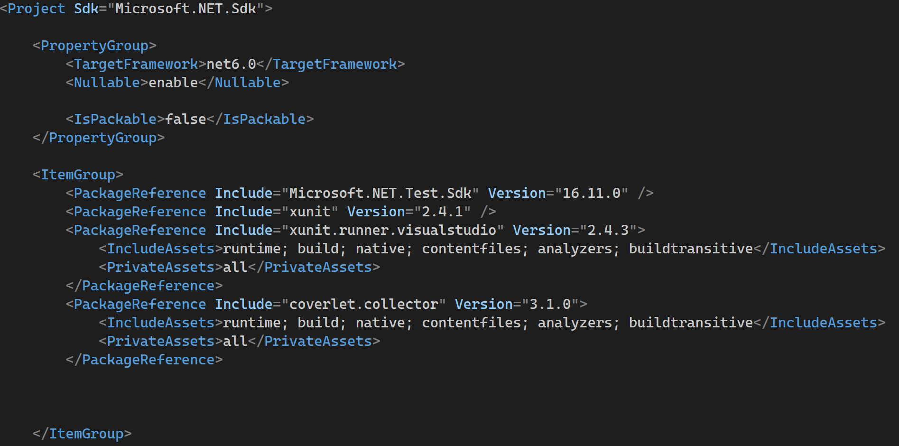
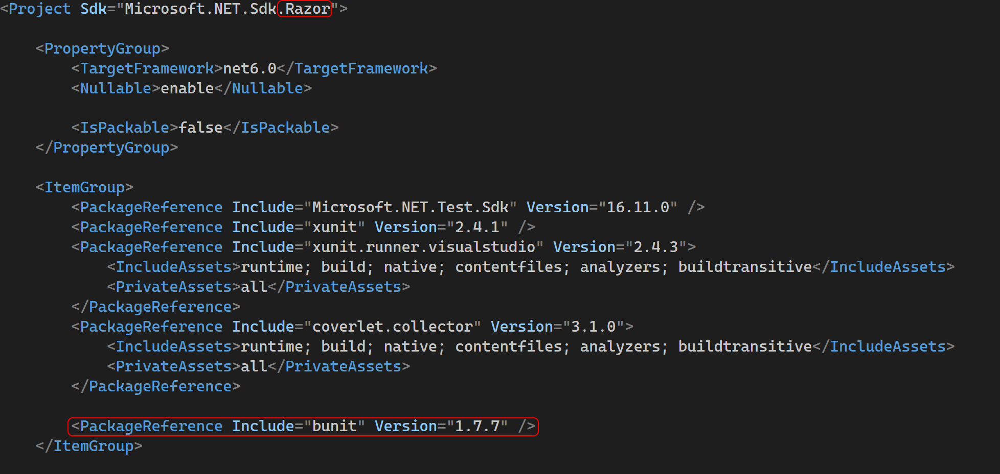
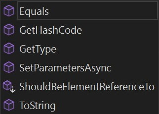

Unit testing in Blazor with:
 bUnit
bUnit
... and some nice ideas about unit testing in general

- Software engineer here in Zurich working @Zühlke Engineering AG
- I ❤ Blazor and C# / .NET
- Even though these slides are written in Html / CSS / JavaScript
- Wrote my own blog solely in Blazor, because I love that piece of technology
- Member/Speaker in the .NET User Group Zürich
- Contact: LinkedIn / steven-giesel.com (Blog) / Github / No Twitter
Disclaimer
- The talk will assume you have some knowledge about Blazor and unit testing in general.
- If not even better, you will see how easy Blazor is ;)
What is bUnit?
bUnit is a testing library for Blazor Components. Its goal is to make it easy to write comprehensive, stable unit tests.
- Testing library for Blazor
- We throw a component against and bUnit renders it (via Blazor) and offers a lot of utility
- Geeky extra info: Behaves generally like Blazor Server
 Author: Egil Hansen
Author: Egil Hansen
 Core Contributor: Steven Giesel
Core Contributor: Steven Giesel
What does bUnit offer?
- Setup and define components under tests using C# or Razor syntax
- Verify outcomes using semantic HTML comparer
- Emulates the Blazor life cycle methods
- Interact with and inspect components as well as trigger event handlers
- Pass parameters, cascading values and inject services into components under test
- Mock Services, IJSRuntime, other components, Blazor authentication and authorization, and others
What does bUnit offer?
Best unit test practices from the C# world
Feels like "a regular" unit test
What does bUnit not offer?
- It is not a general purpose testing framework.
- It does not run in a browser. Doesn't run JavaScript.
- But we can assert that our JavaScript functions got called.
Why not Selenium / Playwright?
- They are slow!
- Expensive to build and maintain
- They are not unit test frameworks. They are meant for e2e test.

Setup - Razor
Setup - Razor
Counter
Counter
Counter
@using Bunit
@using Xunit
@using bUnit.Tutorial.Shared
@inherits Bunit.TestContext
@code {
[Fact]
public void SomeTest()
{
}
}
- Tests written in razor syntax
- Imports for bUnit, xUnit and the component
- TestContext is from bUnit which brings the functionality
- We can write our unit tests as we used to
Counter - Why bUnit

@using Bunit
@using Xunit
@using bUnit.Tutorial.Shared
@inherits Bunit.TestContext
@code {
[Fact]
public void SomeTest()
{
var cut = new Counter();
cut.
}
}
- Every Blazor component can be simply created via new() but component doesn't know how to render itself
- Does not help as only SetParametersAsync is exposed, the rest comes from System.Object
- Doesn't help with life cycle events
- Everything is private.
- How to click the button? How to invoke function from the outside?
The Test
Counter
- Render the component via Blazor Pipeline including all lifecycle events
- Like Selenium or Playwright: Get an element via css selector. Find returns as an AngleSharp.Dom.IElement. Super convenient. More later.
- Compare the markup
Semantic comparing
Question: Are these two markups identical?
Question: Are these two markups identical?
Question: Are these two markups identical?
Counter
Counter
- We can also use css-selectors like an id or the class
- We can also use css-selectors like an id or the class
- Match the markup but ignore every attribute
But wait there is more!We can use AngleSharp as well.
Counter
- We can directly get the TextContent from an AngleSharp.Dom.IElement
- Enables us to use our favourite testing framework like Shouldly or FluentAssertions
- We don't break on markup changes
Conclusion
- Try to test semantic not structure.
- If your structure changes your test becomes invalid as well.
- Well that's bad!
What will follow
- Using Parameter for our counter and test this
- Stub and Mock a 3rd Party Blazor component plus good practices
- If time: JSInterop - How to check if JS was invoked
Resources:
- bUnit repository: https://github.com/bUnit-dev/bUnit
- Documentation: https://bunit.dev/
- Starter Tutorial: https://steven-giesel.com/